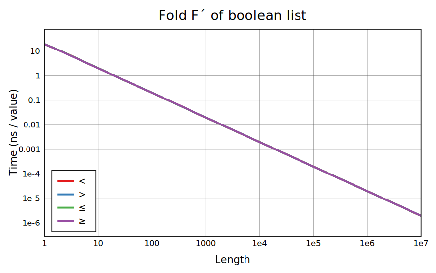
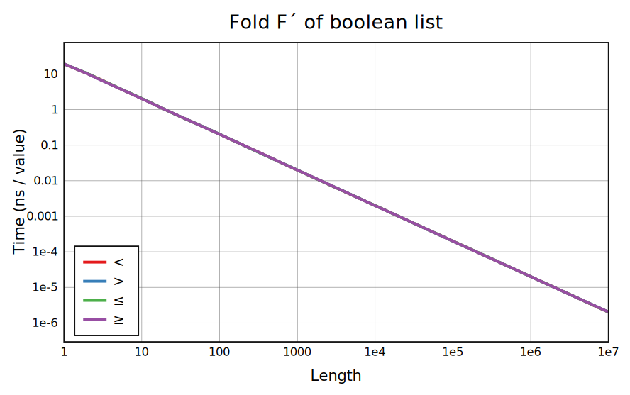
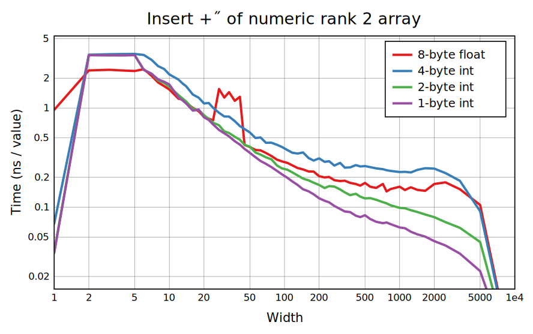
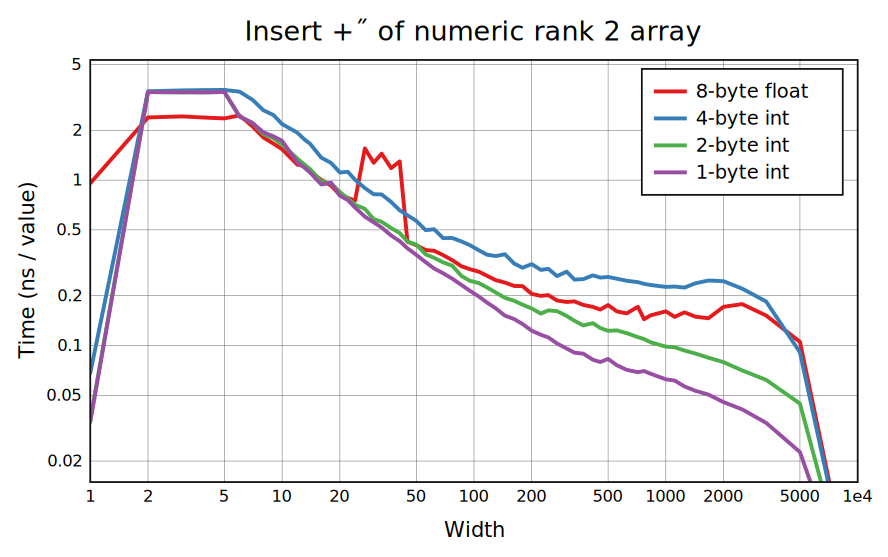

The numeric folds +´, ⌊´, and ⌈´ are overwhelmingly more common than others; ×´ is also used but hardly ever on long arrays. All of these folds are optimized on lists, although the benchmark for ×´ overflows so only the float case is seen (it's not vectorized on integers but cases without overflow would generally be too short for this to matter much; filtering out 1s would be more useful for a very long non-overflowing array). Other folds could be sped up: -´ can be optimized like +´, monadic ¬´ is {(¬2|≠𝕩)+-´𝕩}, and comparisons can be shortcut for what little it's worth.
Max, min, and sum have unrolled SIMD implementations taking advantage of commutativity and associativity. For summing floats this method can't be used because it changes the precision, and it's exposed in •math.Sum instead.
The use of boolean folds is more varied, with ∧∨≠+ the most common operands. All folds with boolean results are optimized, using a shortcutting search when possible and auto-vectorized word-at-a-time code for =≠where it's not. Sum and -´ are implemented with the popcount instruction, and clang (impressively) can convert this to more efficient AVX2 shuffles.
These benchmarks show performance on a table of 1e4 total elements. No optimization here currently, except the width 1 case which is equivalent to a fold.
Insert-cells on small widths can be converted to a transpose and ordinary insert; transpose is the main cost (and it would have cache issues at much larger sizes but is split into blocks to avoid them). Width 1 is a simple reshape. Longer widths use the generic implementation, which ends up calling Fold on each row. For common boolean reductions there's dedicated code that's much faster than transposing.

 

 
